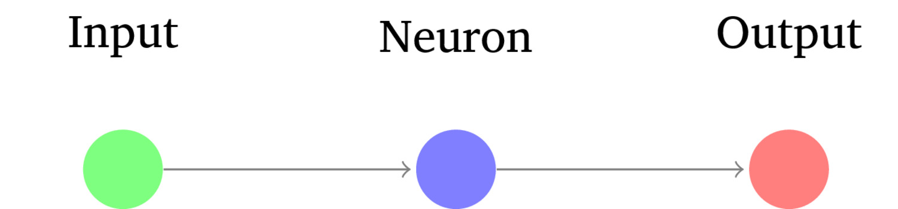
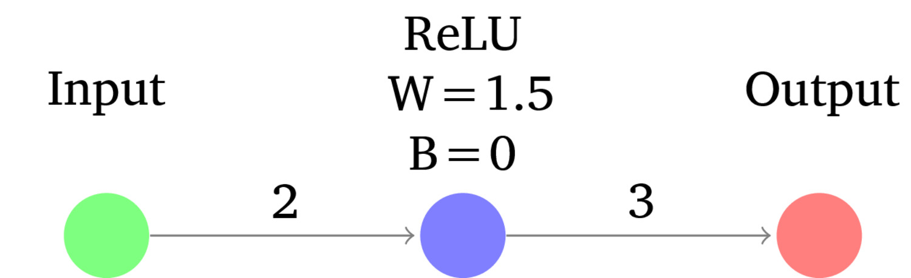

# Deep Neural Networks I: A Conceptual Introduction ### Will Styler - LIGN 168 --- ### Speech Processing is Neural now - For better or worse, there is exactly one kind of model that wins speech processing now - ASR, TTS, Denoising, even VAD are all now neural - So, uh, yeah. Guess we better cover that. --- ### Today's Plan - Neural Networks - What is a Deep Neural Network (DNN)? - Training Deep Neural Networks - Neural Inputs and Outputs - End-to-End Learning --- ### So far, we've been extracting features, and doing statistical learning - "Hey, computer, here are things you should care about, lovingly isolated" - MFCCs, F0, LPC coefficients, pulse locations, and more - "Look at these features and find the patterns based on these labels" - "Then, when I give you a new set of curated measurements, tell me what label fits" --- ### This is great, but it also requires a lot of work - Identify features which are helpful - Find the features - Measure them - Store them, with labeled data, and only then, classify --- ### What if we didn't have to do all that? - What if we could just feed in the data, and make the system figure out the features itself? - Then just insert data directly, and get back answers? - That would be world changing! --- ## Neural Networks --- ### Aside: Neural Networks are not actually neural - Brains are not actually involved - They are not 'modeling the brain' any more than submarines are 'modeling fish' - The goal here is not to make fake brains, it's to make good decisions! --- ### Neural Networks have a simple idea - "We're going to feed the input into a network of simple functions, and with the right network design and parameters, we should get a complex decision" - This depends on one core concept... --- ### Artificial Neurons - This is a tiny computational model of how a neuron (sorta kinda) works - Neurons take in a signal, and if they 'activate' or 'fire', output a modified version of the input signal - Every neuron has an **activation function**, **weights** for outgoing connections, and a **bias** - Weights and biases are the 'parameters' which people mean when they say 'N parameter model' --- ### Let's look at the dumbest network ever  --- ### Neural Activation Function - The activation function describes *the mathematical relationship between the input and the output* - Examples are Sigmoid, Tanh, Softmax, Linear - ReLu ('Rectified Linear Unit') is the most common: "If the input is less than zero, do nothing, otherwise, pass it through" - High pass filter! - f(x) = max(0,x) --- ### Neural Weight - Weights *modify the magnitude of the output signal to another neuron* - The output of a neuron is the input times the weight plus the bias - Output = Weight*Input + Bias - Negative weights make the output signal *smaller* - This makes the next neuron less likely to fire - Positive weights make the output signal *larger* - This makes the next neuron more likely to fire - **Every individual connection gets a weight** --- ### Neural Bias - Biases *modify the threshold for the neuron to activate* - Higher bias means a neuron needs *higher activation to fire* - This makes the *current* neuron less likely to fire - Lower bias means a neuron needs *less activation to fire* - This makes the *current* neuron more likely to fire - **Every individual Neuron gets a bias** --- ### So, every neuron takes an input signal from its connections... - Activates based on activation function - Outputs based on the weight and bias to each subsequent neuron - For Linear Neurons, Output = Weight*Input + Bias - Changes to the weight and bias change the output of a neuron! --- ### A 'firing' neuron  --- ### An 'inhibited' neuron <img class="r-stretch" src="diagrams/nn_single_labelednofire.jpg"> --- ### A Single Neuron can do work - Output = Weight*Input + Bias is a lot like y=mx+b - Very basic arrangements of neurons can accomplish tasks - The 'perceptron' - ... but there are classes of problems a single neuron can't cover - This is part of why we use... --- ## Deep Neural Networks --- ### A Deep Neural Network is just a Deep Neural Network - It has multiple layers of neurons between input and output - These are called **hidden layers** - Each neuron is (generally) fully connected to the prior and next layers - Each connection has an individual weight --- <img class="r-stretch" src="img/dnn.jpg"> --- ### Each Neuron still has activation function and bias - As well as a list of connected neurons which give input and take outputs - With each connection having its own weight - But now, hidden layers are activated by other hidden layers! --- ### Hidden layers <img class="r-stretch" src="img/dnn.jpg"> --- ### At the end, there's an output function - For now, let's focus on... - **Sigmoid:** Give a *single probability* between zero and one --- ### Inputs map to outputs <img class="r-stretch" src="img/dnn.jpg"> --- ### Inference is mapping an input to an output - Inputs are put into the network - The inputs are passed through the entire network, with each neuron and connection contributing to the final output value at the output function - The output layer, with the right output functions, should show the correct answer - This is the 'inference' process --- ### The best performing network will most correctly map inputs to desired outputs Common multi-input-to-Sigmoid tasks: - "Given these 15 sensor readings, should I report a car crash?" - "Given all these risk and protective factors, should this person be released on bail?" - "Given the pixels in this image, is the image likely to be pornographic?" --- ### The key to the model isn't the code, but the parameters - The architecture of the model matters, but that's not the expensive and important part - The right set of weights and biases will yield correct results - The wrong set of weights and biases *in exactly the same network shape* will yield gibberish and garbage - Sharing "the model" is sharing these correct weights - **... but how do we find them?** --- ## Training Deep Neural Networks --- ### We're giving intuitions, not calculus - I'm not describing the math - [Here's a great book which does more](https://udlbook.github.io/udlbook/) - The math isn't so crazy, but requires calculus and linear algebra to fully understand - LIGN 167 goes harder on the math - I am oversimplifying many aspects to get you the core intuition --- ### How does training work? - **Initialization:** Set up the weights and bias matrices with reasonable values - **Forward Pass:** What is the NN's current 'decision' based on the input? - This is the same process we'll use later to get decisions from the model - **Loss Calculation:** What does the output look like relative to the desired output? - **Backpropagation:** Let's tweak the biases and weights to try and get closer to the desired output --- ### Initialization - Every parameter (e.g. Weight and bias) needs to start with some value - Zeroes are mathematically Not Good for this. - There's a lot of study on this, but the answer turns out to be "Randomish numbers, not too small, not too large" --- ### Forward Pass <img class="r-stretch" src="img/dnn.jpg"> --- ### Calculating Error/Loss - A *loss function* tells the model how to evaluate the difference between the desired, actual output and the predicted output - Many functions are possible, and each task will have preferred loss functions - This is important, because it tells the model what it needs to get right! --- ### Common Loss Functions - **Mean Squared Error**: Penalize based on the average squared difference between the predicted and actual values - **Mean Absolute Error**: Penalize based on the average absolute difference between the predicted and actual values - **Cross-Entropy Loss**: For probability outputs, penalize more heavily as the predicted probability diverges from the 'correct' answer - **Dice Coefficient**: How much do the predicted pixels overlap with the actual pixels? --- ### Now, you know how far off you were from 'Correct' - It's time for... --- ### Backpropagation - "Let's update the biases of each neuron and connection weights in the network by looking at the partial derivative of each with respect to the loss function" - There's a slope of movement which leads towards less loss, go that way! - This also determines how much a given weight "matters" - The amount of modification is controlled by the 'Learning Rate' - This is an optimization problem! - Many optimizers are used, Adam ('Adaptive Moment Estimation') is perhaps most common - The goal is to find the parameter values which result in the lowest possible loss --- ### Backpropagation <img class="r-stretch" src="img/dnn.jpg"> --- ### You keep cycling through the data to train - Forward pass, Loss, Backpropagation and Update, then Forward Pass, Loss, Backprop... - You process **batches** of data at a time - When you've trained on the entire dataset, and loop back around, you've completed an **epoch** - This can take a while! --- ### This eventually trains the model to give correct answers - "Keep guessing, and tweaking, and guessing, and tweaking" - Eventually, you'll arrive at a local minimum - "Well, there's no direction I can go which makes the loss any less!" - This may or may not be the true minimum, but that's another lecture! - The final parameters (e.g. Weights and Biases) are then ready to use! --- ### You can 'fine tune' later - You take a pre-trained model, and give it a smaller amount of new representative data - Repeat the learning process with smaller learning rates and focus on deeper layers - This is great for adapting a general model to a more specific task or new domain - "I'm going to fine-tune this existing ASR model with data from Tira, so it works well there!" - Mark --- ### Interim Summary - Artificial Neurons turn inputs into outputs according to function and bias, and output according to weights - Deep Neural Networks allow more complex decision making - Training involves doing inference, finding error, assigning that error to individual weights/biases, and updating parameters - Inference is just putting the input in, and observing the outputs - ... but what are the possible inputs and outputs? --- ## Inputs and Outputs --- ### Neural Networks have very flexible inputs and outputs <img class="r-stretch" src="img/dnn.jpg"> --- ### Numbers - This is easy, just slap them into the input position! --- ### Text - 'Tokenize' the text, storing each possible text item as an entry in the Tokenizer's dictionary - Then, give the input as a series of numbers, corresponding to tokens in that dictionary - Sentences are strings of numbers representing tokens --- ### Images <img class="r-stretch" src="img/image_as_matrix.png"> --- ### Audio - More on this soon! --- ### Output Flexibility - **Linear:** Just give me the last layer's summed output - **Tanh:** Turn the last layer's output into a prediction between -1 and 1 - **Sigmoid:** Give a *single probability* between zero and one - **Softmax:** Please choose among possible output *classes*, giving probabilities for each that add to one - **Multiple Output Functions:** You don't have to use the same function for every output neuron! --- ### So, you can map a variety of inputs *directly* to a variety of outputs - This leads to the most attractive property of Neural Networks... --- ## End-to-End Learning --- ### End-to-End learning - Deep Learning doesn't require feature engineering --- ## Deep Learning doesn't require feature engineering! --- ### End-to-End learning Deep Learning doesn't require feature engineering - You can go straight from raw data to your final decision - DNNs allow intermediate representations and features which work to **emerge** - Smart architectures can amplify this effect --- ### DNNs create their own features and use them! - Features just happen, and then get used for classification - Inputs map to outputs, in an emergent way - We don't actually understand what features they're using to make decisions --- ### "Wait, we don't know how they're making decisions?" - Nope. - **We as a species have no idea how these things do what they do.** --- ### "Isn't that a problem?" - Why would we put up with that?! - ... and is there just one kind of Deep Neural Network? - **Next time!** --- ### Wrapping up - Artificial Neurons turn inputs into outputs according to function and bias, and output according to weights, and can combine into deep networks - Training involves doing inference, finding error, assigning that error to individual weights/biases, and updating parameters - You can use a variety of input and output data types - Neural networks generate their own features and find their own patterns in the data --- <huge>Thank you!</huge>